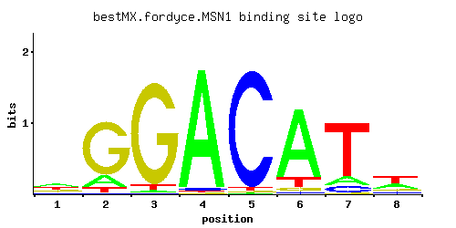

MSN1
YOL116W, PHD2, MSS10, HRB382, FUP1
Transcriptional activator involved in regulation of invertase and glucoamylase expression, invasive growth and pseudohyphal differentiation, iron uptake, chromium accumulation, and response to osmotic stress; localizes to the nucleus
Best-performing DNA-binding model.

View and copy the recommended matrices ↘
A | 0.36 0.16 0.02 0.96 0.01 0.84 0.12 0.32 C | 0.12 0.01 0.01 0.02 0.96 0.02 0.10 0.10 G | 0.22 0.77 0.93 0.01 0.01 0.04 0.01 0.15 T | 0.30 0.06 0.04 0.01 0.02 0.11 0.77 0.42
A | 36 16 2 96 1 84 12 32 C | 12 1 1 2 96 2 10 10 G | 22 77 93 1 1 4 1 15 T | 30 6 4 1 2 11 77 42
A | 0.12 -0.69 -2.77 1.10 -3.47 0.97 -0.98 0.00 C | -0.41 -2.89 -2.89 -2.20 1.67 -2.20 -0.59 -0.59 G | 0.20 1.45 1.64 -2.89 -2.89 -1.50 -2.89 -0.18 T | -0.06 -1.67 -2.08 -3.47 -2.77 -1.07 0.88 0.27
Alternative candidate matrices 3
Historical matrix candidates from the original ScerTF database. Expand a source to inspect its original logo, scores, and matrix values.
MSN1Foat et. al.P = 0.0001664View matrix ↘
MSN1_AFordyce et. al.P = 1View matrix ↘
MSN1_BFordyce et. al.P = 1View matrix ↘
Gene-level annotations and interactions.
Genes bound in ChIP-chip experiments 24 genes
YBL041W, YBL042C, YBR048W, YDL045W-A, YDL060W, YDL061C, YDR098C, YDR390C, YGL135W, YGL136C, YGL145W, YGL146C, YGR256W, YKL118W, YKR038C, YLR043C, YLR278C, YLR279W, YLR282C, YLR328W, YMR064W, YNL028W, YOR272W, YPR035W
Genes affected by TF deletion 68 genes
YDR064W, YIL148W, YDL130W, YBL087C, YER144C, YNR062C, YLR061W, YPL016W, YFL013W-A, YJL022W, YLL003W, YPL142C, YFR006W, YFL044C, YHR021C, YMR238W, YDR281C, YKL171W, YML057W, YPL143W, YMR173W, YBR041W, YML124C, YGR161C, YOR386W, YOL116W, YDL230W, YBR101C, YDR107C, YLR345W, YJL190C, YDR048C, YDR386W, YLR262C-A, YLR264W, YLR425W, YEL026W, YGL023C, YGL029W, YLR078C, YLR420W, YML130C, YJR127C, YHR128W, YDR179C, YHR072W-A, YKL030W, YLR388W, YDL242W, YDR323C, YER099C, YER072W, YOL119C, YPR035W, YBL042C, YKL156W, YPL157W, YMR065W, YAL033W, YHR136C, YKL133C, YBR021W, YNL264C, YCL004W, YDL029W, YFL068W, YCL006C, YNL007C
Genes supported by both experiments 2 genes
YBL042C, YPR035W